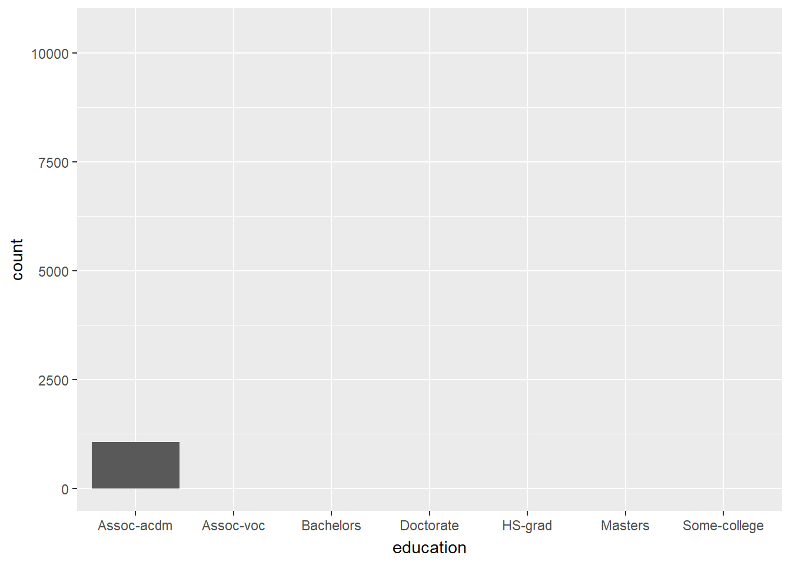

1 + 1[1] 2How to do it?:
Open the Rmarkdown file of this assignment (link) in Rstudio.
Right under each question, insert a code chunk (you can use the hotkey Ctrl + Alt + I to add a code chunk) and code the solution for the question.
Knit the rmarkdown file (hotkey: Ctrl + Alt + K) to export an html.
Publish the html file to your Githiub Page.
Submission: Submit the link on Github of the assignment to Canvas
Quarto enables you to weave together content and executable code into a finished document. To learn more about Quarto see https://quarto.org.
When you click the Render button a document will be generated that includes both content and the output of embedded code. You can embed code like this:
1 + 1[1] 2You can add options to executable code like this
[1] 4The echo: false option disables the printing of code (only output is displayed).
***How to do it?***:
- Open the Rmarkdown file of this assignment ([link](assignment8.Rmd)) in Rstudio.
- Right under each **question**, insert a code chunk (you can use the hotkey `Ctrl + Alt + I` to add a code chunk) and code the solution for the question.
- `Knit` the rmarkdown file (hotkey: `Ctrl + Alt + K`) to export an html.
- Publish the html file to your Githiub Page.
***Submission***: Submit the link on Github of the assignment to Canvas
knitr::opts_chunk$set(message = FALSE)-------
1. Install two packages `gganimate` and `gifski` then restart Rstudio. Using the `Adult Census Income` data, make an animation using `geom_point` and `transition_states`.
#Importing libraries and data.
library(gganimate)
library(gifski)
library(dplyr)
library(tidyverse)
df <- read_csv('adult_census.csv')
names(df) [1] "age" "workclass" "fnlwgt" "education"
[5] "education.num" "marital.status" "occupation" "relationship"
[9] "race" "sex" "capital.gain" "capital.loss"
[13] "hours.per.week" "native.country" "income" #Plotting the hours per week for each observation by age.
df %>%
ggplot()+
geom_point(aes(x=age, y = hours.per.week))+
transition_states(age)2. Using the `Adult Census Income` data, make an animation using `geom_bar` and `transition_states`.
#Filtering for select categories of education and then using ggplot's geom_bar function to plot the number of observations by each level of education.
df %>%
filter(education == "Assoc-acdm"|
education == "Assoc-voc"|
education == "Bachelors" |
education == "Doctorate"|
education == "HS-grad"|
education == "Masters"|
education == "Some-college") %>%
ggplot()+
geom_bar(aes(x=education))+
transition_states(education)
3. Use the WHO’s dataset at [this link](https://covid19.who.int/WHO-COVID-19-global-data.csv). Make a top-10 bar race by months between countries on the number of deaths by Covid 19 in 2021.
#Importing data and observing the first 6 rows of the dataframe.
df <- read_csv('https://covid19.who.int/WHO-COVID-19-global-data.csv')
head(df)# A tibble: 6 × 8
Date_reported Country_code Country WHO_region New_cases Cumulative_cases
<date> <chr> <chr> <chr> <dbl> <dbl>
1 2020-01-03 AF Afghanistan EMRO 0 0
2 2020-01-04 AF Afghanistan EMRO 0 0
3 2020-01-05 AF Afghanistan EMRO 0 0
4 2020-01-06 AF Afghanistan EMRO 0 0
5 2020-01-07 AF Afghanistan EMRO 0 0
6 2020-01-08 AF Afghanistan EMRO 0 0
# ℹ 2 more variables: New_deaths <dbl>, Cumulative_deaths <dbl>#Importing libraries and filtering for the year 2021. The `month` column was created and the changes were saved to a new dataframe. The dataframe is then grouped by `month` and `Country`. The total deaths for each month by country was calculated using summarise and taking the sum of the new deaths.
library(lubridate)
library(knitr)
df2 <- df %>%
filter(year(Date_reported) == 2021)
df2$month <- month(df2$Date_reported)
df2 <- df2 %>%
group_by(month,Country) %>%
summarise(total_deaths = sum(New_deaths))
df2# A tibble: 2,844 × 3
# Groups: month [12]
month Country total_deaths
<dbl> <chr> <dbl>
1 1 Afghanistan 211
2 1 Albania 188
3 1 Algeria 137
4 1 American Samoa 0
5 1 Andorra 17
6 1 Angola 59
7 1 Anguilla 0
8 1 Antigua and Barbuda 2
9 1 Argentina 5445
10 1 Armenia 257
# ℹ 2,834 more rows#Creating the variable rank and saving it to the dataframe with mutate. Filter was used to only list countries that are ranked in the top 10.
df2 <- df2 %>%
group_by(month) %>%
mutate(rank=rank(-total_deaths)) %>%
filter(rank <=10)
df2# A tibble: 120 × 4
# Groups: month [12]
month Country total_deaths rank
<dbl> <chr> <dbl> <dbl>
1 1 Brazil 29985 4
2 1 France 16371 6
3 1 Germany 23808 5
4 1 Italy 14675 9
5 1 Mexico 38568 2
6 1 Russian Federation 16163 7
7 1 South Africa 15918 8
8 1 Spain 12415 10
9 1 The United Kingdom 36103 3
10 1 United States of America 100119 1
# ℹ 110 more rows#Plotting the total deaths by country with ggplot's geom_bar function. The the argument `month` within the transition_states function allows the month to increase. The graph updates every time the month changes.
p1 <- df2 %>%
ggplot(aes(x=rank, y=total_deaths, group=Country, fill=Country,
label=Country)) +
geom_col()+
geom_text(aes(y = total_deaths, label = Country), hjust = 1.4)+
coord_flip(clip = "off", expand = FALSE) +
labs(title = 'Month: {closest_state}', x='',
y='Total Number of Deaths', fill='Country')+
theme(plot.title = element_text(hjust = 1, size = 22),
axis.ticks.y = element_blank(),
axis.text.y = element_blank()) +
transition_states(month)+
ease_aes("cubic-in-out")animate(p1, nframes = 400)4. Make a bar race using a dataset of your own interest. You may use the dataset that we use in class (https://covidtracking.com/data/download/all-states-history.csv) but you should make a different bar racev from ones in the slides.
#Importing data with read_csv and saving it to a dataframe. Source: https://www.kaggle.com/datasets/sujaykapadnis/tornados
df <- read_csv("tornados.csv")
df# A tibble: 68,693 × 27
om yr mo dy date time tz datetime_utc st
<dbl> <dbl> <dbl> <dbl> <date> <time> <chr> <dttm> <chr>
1 192 1950 10 1 1950-10-01 21:00 America/… 1950-10-02 03:00:00 OK
2 193 1950 10 9 1950-10-09 02:15 America/… 1950-10-09 08:15:00 NC
3 195 1950 11 20 1950-11-20 02:20 America/… 1950-11-20 08:20:00 KY
4 196 1950 11 20 1950-11-20 04:00 America/… 1950-11-20 10:00:00 KY
5 197 1950 11 20 1950-11-20 07:30 America/… 1950-11-20 13:30:00 MS
6 194 1950 11 4 1950-11-04 17:00 America/… 1950-11-04 23:00:00 PA
7 198 1950 12 2 1950-12-02 15:00 America/… 1950-12-02 21:00:00 IL
8 199 1950 12 2 1950-12-02 16:00 America/… 1950-12-02 22:00:00 IL
9 200 1950 12 2 1950-12-02 16:25 America/… 1950-12-02 22:25:00 AR
10 201 1950 12 2 1950-12-02 17:30 America/… 1950-12-02 23:30:00 IL
# ℹ 68,683 more rows
# ℹ 18 more variables: stf <dbl>, mag <dbl>, inj <dbl>, fat <dbl>, loss <dbl>,
# slat <dbl>, slon <dbl>, elat <dbl>, elon <dbl>, len <dbl>, wid <dbl>,
# ns <dbl>, sn <dbl>, f1 <dbl>, f2 <dbl>, f3 <dbl>, f4 <dbl>, fc <lgl>#Grouping the dataframe by year and state, the summarise function was used to compare the average magnitude by state in each year.
df2 <- df %>%
group_by(yr,st) %>%
summarise(avg_magnitude = mean(mag))
df2# A tibble: 3,133 × 3
# Groups: yr [73]
yr st avg_magnitude
<dbl> <chr> <dbl>
1 1950 AL 2.5
2 1950 AR 2.33
3 1950 CO 1
4 1950 CT 2
5 1950 FL 1.17
6 1950 GA 0.75
7 1950 IA 2
8 1950 IL 1.88
9 1950 IN 1
10 1950 KS 1.47
# ℹ 3,123 more rows#Creating the variable `rank` and saving it as a column to the dataframe with mutate. The filter function was used to limit the dataframe to only the states with a top 10 magnitude.
df2 <- df2 %>%
group_by(yr) %>%
mutate(rank=rank(-avg_magnitude)) %>%
filter(rank <=10)
df2# A tibble: 728 × 4
# Groups: yr [73]
yr st avg_magnitude rank
<dbl> <chr> <dbl> <dbl>
1 1950 AL 2.5 2
2 1950 AR 2.33 4
3 1950 CT 2 6.5
4 1950 IA 2 6.5
5 1950 IL 1.88 9
6 1950 MN 2 6.5
7 1950 ND 3 1
8 1950 OH 2 6.5
9 1950 TX 1.8 10
10 1950 WI 2.4 3
# ℹ 718 more rows#Plotting the average magnitude of tornados by state. The the argument `yr` within the transition_states function allows the year to increase. The graph updates every time the year changes.
p2 <- df2 %>%
ggplot(aes(x=rank, y=avg_magnitude, group=st, fill=st,
label=st)) +
geom_col()+
geom_text(aes(y = avg_magnitude, label = st), hjust = 1.4)+
coord_flip(clip = "off", expand = FALSE) +
labs(title = 'Year: {closest_state}', x='',
y='avg_magnitude', fill='st')+
theme(plot.title = element_text(hjust = 1, size = 22),
axis.ticks.y = element_blank(),
axis.text.y = element_blank()) +
transition_states(yr)+
ease_aes("cubic-in-out")
animate(p2, nframes = 400)